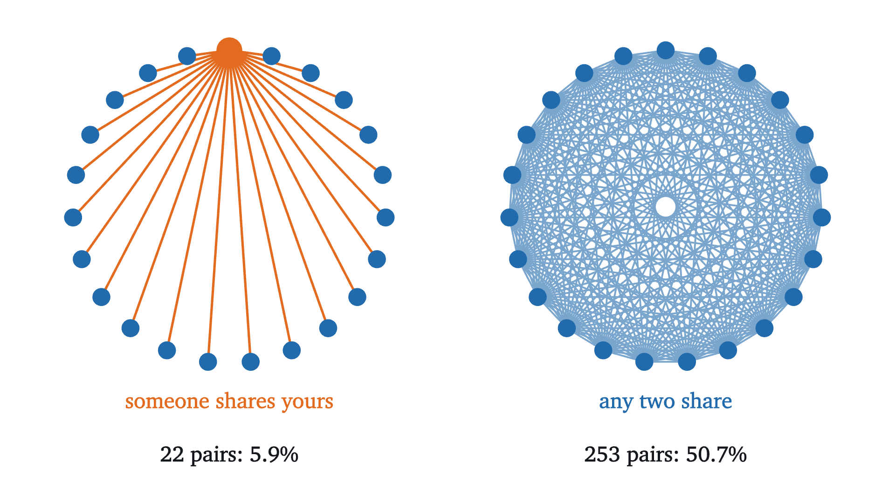
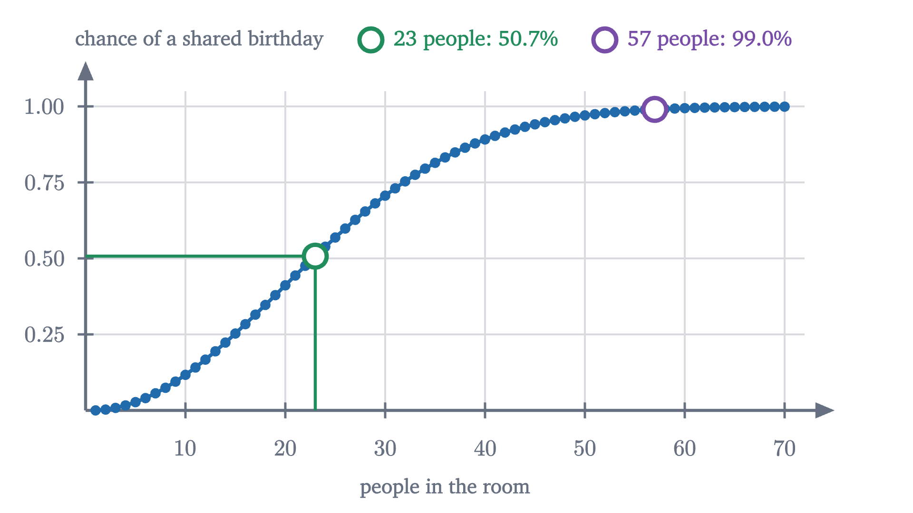
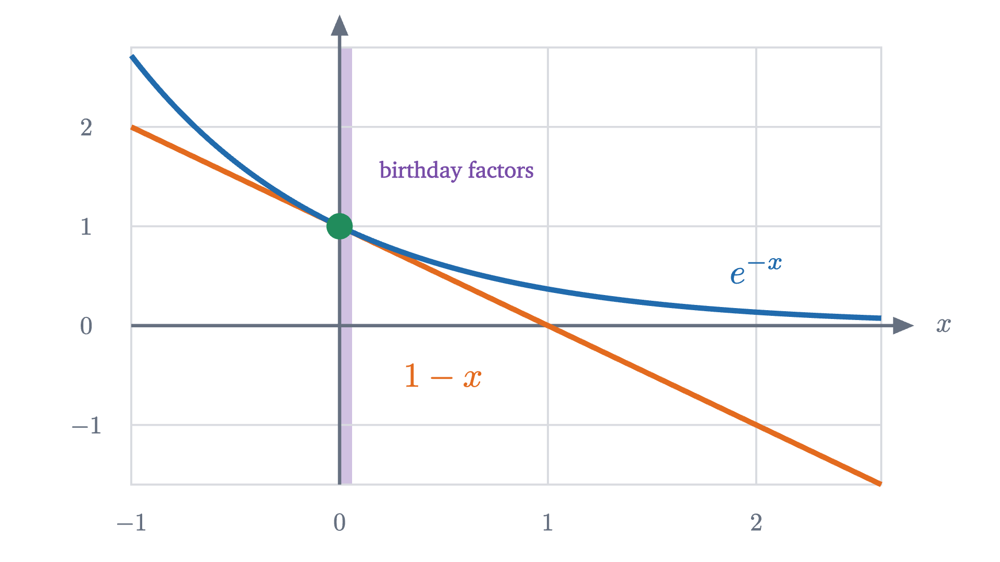
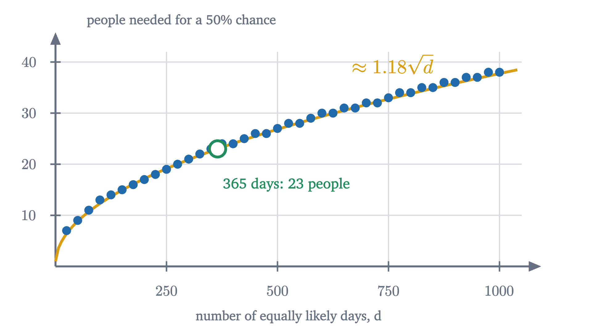

The birthday paradox: why 23 people is enough
In a room of 23 people, two probably share a birthday. The exact formula, why the answer grows like a square root, and what the model assumes.
AssumesWhat probability means: counting equally likely outcomesBayes' rule: why a positive test is usually a false alarm
How many people do you need in a room before it is more likely than not that two of them share a birthday?
Pause and try
Commit to a number before reading on. Then say, in a sentence, what reasoning produced it.
Show answerHide answer
The answer is 23. Most people guess far higher, and the commonest reasoning is “there are 365 days, so you need about half of 365, around 183”. With 183 people a shared birthday is certain for all practical purposes: the chance of none is smaller than one in a million billion billion.
A room of 23 is a school class or two soccer teams and a referee. With that many people, the chance that some two were born on the same day of the year is just over one half. With 50 people it is 97%. People find this so far from their intuition that it is called the birthday paradox, although nothing about it is contradictory. This lesson computes the number exactly, and then explains why it is the size it is.
Whose birthday?
There is a simple calculation that seems to show 23 people are nowhere near enough. Pick one person, say yourself. Each of the other 22 has a 1 in 365 chance of sharing your birthday, so the chance that somebody does is roughly $22/365$, about 6%.
That calculation is nearly right, and it answers a different question. It asks whether somebody shares your birthday. The question in the room is whether any two people share a birthday, and most of those pairs do not involve you.

Count the pairs. Each of the 23 people can be paired with 22 others, which gives $23 \times 22 = 506$, but that counts every pair twice (once from each end), so there are $506/2 = 253$ pairs. In general $n$ people form
pairs. The hero animation shows another way to see the same count: the second person to arrive adds 1 pair, the third adds 2, and the $n$th adds $n - 1$, so the total is $1 + 2 + \dots + (n-1)$. The number of pairs grows like the square of the number of people, which is the reason a modest room holds so many chances for a match.
It is tempting to finish at once: 253 pairs, each matching with probability $1/365$, so the chance of a match is $253/365 \approx 0.69$. That overshoots, and we can see it must be wrong in general because with 28 people it gives $378/365$, a probability greater than 1. Adding probabilities is only valid for events that cannot happen together, and two different pairs can both match. We need a calculation that handles the overlaps honestly.
The model
Before computing anything we have to say exactly what is random. We make three assumptions, and we will return to how reasonable they are.
- There are 365 possible birthdays. (February 29 is ignored.)
- Each person is equally likely to have been born on any of the 365 days.
- Different people’s birthdays are independent: knowing one person’s tells you nothing about another’s.
In the language of the first lesson, the sample space for a room of $n$ people is the set of all lists $(b_1, b_2, \dots, b_n)$ in which each $b_i$ is one of the 365 days. There are $365^n$ such lists. Assumptions 2 and 3 together say that all of them are equally likely, for the same reason the 36 outcomes of two dice are: each new person splits every existing case into 365 equal parts. So the probability of an event is the number of lists in it divided by $365^n$.
The event we want, “at least two people share a birthday”, is awkward to count directly, because a list can contain one shared pair, or two, or a triple. Its complement is simple: “all $n$ birthdays are different”. The complement rule, $P(A) = 1 - P(A^c)$, lets us count the simple event and subtract.
Two people, then three
With two people there are $365^2$ equally likely lists. The birthdays differ when the second is any of the 364 days other than the first, so $365 \times 364$ lists have no match, and
Pause and try
Do the same for three people. How many of the $365^3$ lists have three different birthdays? What is the probability of at least one match?
Show answerHide answer
The first birthday can be any of 365 days, the second any of the 364 others, and the third any of the 363 days not yet used: $365 \times 364 \times 363$ lists. So $P(\text{no match}) = \frac{364}{365} \times \frac{363}{365} = \frac{132{,}132}{133{,}225} \approx 0.9918$, and $P(\text{match}) \approx 0.0082$. That is almost exactly three times the two-person answer, as it should be: three people make three pairs.
Person by person
The pattern is already visible. Think of the people arriving one at a time, and ask each newcomer to avoid every birthday already in the room. The first person cannot fail. The second must miss 1 day out of 365. The third must miss 2 days, given that the first two were different. When $k$ people with $k$ different birthdays are in the room, the next person avoids them all with probability $(365 - k)/365$.
This is the multiplication rule from the lesson on conditional probability, $P(A \cap B) = P(A \mid B)\,P(B)$, used repeatedly: the chance of no match among the first $k + 1$ people is the chance of no match among the first $k$, times the chance that the newcomer misses all $k$ of their birthdays given that.
At the last step the calendar still looks almost empty: 23 cells filled out of 365, and the 23rd person had a $343/365 \approx 94\%$ chance of missing them all. No single step is risky. The product falls below one half because there are many steps and each one is a little worse than the one before.
The exact formula
The person-by-person argument is correct, and it can be made airtight by going back to counting lists, which avoids any worry about what we are conditioning on.
For $d = 365$ and $n = 23$ the product is $0.4927$, so the chance of a shared birthday is $0.5073$. For $n = 22$ the chance of a shared birthday is $0.4757$. So 23 is the smallest room in which a match is more likely than not.
Pause and try
Before looking at the graph: what do you expect the probability of a shared birthday to be in a room of 50? And how many people are needed for 99%?
Show answerHide answer
For 50 people it is 97.0%. For 99% you need 57 people. Both are far below what the “half of 365” intuition suggests.

Asking a thousand rooms
A probability of 0.507 is a claim about frequency: of many rooms of 23 people, about 50.7% should contain a shared birthday. We can check it by simulation. The figure fills 1000 rooms with 23 random birthdays each and marks the rooms in which two coincide.
In this run 516 of the 1000 rooms had a match. The model predicts 507 on average, and a count of 1000 yes-or-no trials typically lands within 15 or 20 of its average, so the simulation and the formula agree.
Why the answer is about a square root
The exact product settles the question for 365 days, but it does not explain the size of the answer. Why 23, and not 10 or 60? What would the number be for a year of 1000 days? A product of 23 fractions is hard to reason about. A sum would be easier, and exponentials turn products into sums, since $e^{a} e^{b} = e^{a+b}$. So we look for a way to compare each factor $1 - \frac{k}{365}$ with an exponential.

Apply this to each factor of the product, with $x = k/d$.
Look at the exponent. It is $\binom{n}{2}/d$: the number of pairs divided by the number of days. The idea we started with, that pairs are what matter, has reappeared inside a proof, in a form that is correct. The naive estimate “pairs over days” was the right quantity; it belongs in an exponent.
Now the size of the answer can be read off. The bound guarantees a match with probability at least $\frac12$ as soon as $e^{-\binom{n}{2}/d} \le \frac12$, that is, as soon as
For $d = 365$ the right side is $365 \ln 2 \approx 252.9987$, and 23 people form exactly 253 pairs. So the bound alone proves that 23 people suffice, with almost nothing to spare. For general $d$, the condition $n(n-1) \ge 2d\ln 2$ holds once $n$ is a little more than $\sqrt{2 \ln 2}\,\sqrt{d} \approx 1.18\sqrt{d}$. The number of people needed grows like the square root of the number of days, because the number of pairs grows like the square of the number of people.

The bound is a one-way guarantee: it says $1.18\sqrt{d}$ people are enough. That you cannot do with far fewer follows from a bound in the other direction, $P(\text{match}) \le \binom{n}{2}/d$, which is the last problem below.
How good are the assumptions?
The three assumptions are a model of real birthdays, and each is only approximately true.
365 days. Including February 29 as a 366th equally likely day (which overstates it) changes the probability for 23 people from 0.5073 to 0.5063. The threshold stays at 23.
Equally likely days. Real births are not uniform over the year; in many countries late summer and early autumn are busier, and weekends and holidays quieter. This makes a match more likely. To see why that is plausible, push it to the extreme: if everyone were born in the same month, a room of 23 would almost certainly contain a match. In fact, for any fixed $n$ the uniform distribution gives the smallest possible chance of a match, so our figures are lower bounds for real populations. That is a standard result, and here is a sketch of the reason. Let day $i$ have probability $p_i$, single out two days, and sort the lists with no match by whether they use both of those days, exactly one, or neither. Adding up the three kinds gives $P(\text{no match}) = A\,p_1 p_2 + B\,(p_1 + p_2) + C$, where $A, B, C \ge 0$ depend only on the other days. Now replace $p_1$ and $p_2$ by their average. The sum $p_1 + p_2$ is unchanged, and the product does not decrease, because $\left(\frac{p_1 + p_2}{2}\right)^2 - p_1 p_2 = \left(\frac{p_1 - p_2}{2}\right)^2 \ge 0$. So evening out two days never raises the chance of a match, and repeatedly evening out the most and least likely days brings any distribution as close to uniform as we like. (The sketch leaves out the limiting step at the end, which uses the fact that the formula is continuous in the $p_i$.) For realistic birth data the effect is small, and the threshold stays at 23.
Independence. This fails in a room containing twins, and it fails if people were invited because of their birthdays. It holds well for a group assembled for unrelated reasons.
So the conclusion is robust: the departures from the model are small, and the main one pushes in the direction of more matches.
Worked examples
Common mistakes
Stepping back
What made this problem hard was looking at the wrong objects. A room of 23 feels small against 365 days because we compare people with days. The comparison that matters is pairs with days, and 253 pairs against 365 days is no longer lopsided. The exact product confirmed the number, and the inequality $1 - x \le e^{-x}$ explained it by turning the product into $e^{-\text{pairs}/\text{days}}$.
The square-root law reaches well beyond birthdays. Whenever items are assigned at random to $d$ slots, repeats begin when the number of items is around $\sqrt{d}$, far sooner than when the slots fill up. The technique carries over too: compute the complement, multiply conditional probabilities along a chain, and bound a product by an exponential. The next lesson returns to the 253 pairs and finds the average number of them that match.
Check yourself
In a class of 30 students (with the lesson’s assumptions), which statement is correct?
Problems
Use a calculator for the products. The first three are direct, the next three combine ideas, and the last two ask for arguments.
Problem 1
Find the probability that at least two of four people share a birthday. Compare it with the number of pairs divided by 365.
Show solutionHide solution
$P(\text{no match}) = \frac{364}{365} \cdot \frac{363}{365} \cdot \frac{362}{365} = \frac{47{,}831{,}784}{48{,}627{,}125} \approx 0.98364$, so $P(\text{match}) \approx 0.0164$. Four people make $\binom{4}{2} = 6$ pairs, and $6/365 \approx 0.0164$. The two agree to three significant figures because with so few people overlapping matches are very rare.
Problem 2
How many pairs are there among 30 people? What is the smallest group in which the number of pairs exceeds 365?
Show solutionHide solution
$\binom{30}{2} = \frac{30 \times 29}{2} = 435$. For the second part we need $n(n-1)/2 > 365$, that is, $n(n-1) > 730$. Since $27 \times 26 = 702$ and $28 \times 27 = 756$, the smallest such group has 28 people, with 378 pairs.
Problem 3
Assume each person is equally likely to be born in any of the 12 months, independently. How many people are needed before two of them probably share a birth month?
Show solutionHide solution
Use the product formula with $d = 12$. For $n = 4$: $P(\text{no match}) = \frac{11}{12} \cdot \frac{10}{12} \cdot \frac{9}{12} = \frac{990}{1728} \approx 0.573$, so a match has probability $0.427$. For $n = 5$: multiply by $\frac{8}{12}$ to get $\frac{7920}{20{,}736} \approx 0.382$, so a match has probability $0.618$. Five people are needed. The rule of thumb gives $1.18\sqrt{12} \approx 4.1$, which points to the same answer once rounded up to the next whole number that works.
Problem 4
In a class of 30, find (a) the probability that at least one of your 29 classmates shares your birthday, and (b) the probability that some two students in the class share a birthday. Explain the size of the gap.
Show solutionHide solution
(a) Each classmate misses your birthday with probability $364/365$, independently, so $P = 1 - (364/365)^{29} \approx 1 - 0.9235 = 0.0765$. (b) $P = 1 - \prod_{k=0}^{29}(1 - k/365) \approx 1 - 0.2937 = 0.7063$. Event (a) concerns the 29 pairs that include you; event (b) concerns all 435 pairs, fifteen times as many.
Problem 5
Use the bound $P(\text{match}) \ge 1 - e^{-n(n-1)/730}$ to find a number of people that guarantees a 99% chance of a shared birthday. The exact threshold is 57. Why does the bound give a larger number?
Show solutionHide solution
We need $e^{-n(n-1)/730} \le 0.01$, that is, $n(n-1) \ge 730 \ln 100 \approx 3361.8$. Since $58 \times 57 = 3306$ and $59 \times 58 = 3422$, the bound guarantees 99% for $n = 59$. It is larger than 57 because $e^{-x}$ is strictly greater than $1 - x$ for $x > 0$, so the exponential overestimates the chance of no match, and the overestimate is worse for the later factors, where $x = k/365$ is as large as $0.16$. The bound is always on the safe side: any $n$ it certifies really does work.
Problem 6
Redo the 23-person calculation with 366 equally likely days. Does the threshold change?
Show solutionHide solution
With $d = 366$, $P(\text{no match}) = \prod_{k=0}^{22}(1 - k/366) \approx 0.4937$, so $P(\text{match}) \approx 0.5063$, still above one half. For 22 people the match probability is about $0.4748$, still below. The threshold remains 23. One extra day in 365 changes each factor by about one part in a thousand, too little to move the crossing point by a whole person.
Problem 7
A student argues: “There are 253 pairs among 23 people. Each pair fails to match with probability $364/365$. So the chance that no pair matches is $(364/365)^{253} \approx 0.4995$, and the chance of a match is $0.5005$.” The answer is close to the true value $0.5073$, but the argument contains an unjustified step. Find it.
Show solutionHide solution
Multiplying the 253 probabilities assumes that the 253 events “pair $\{i, j\}$ does not match” are independent of one another, and they are not. Take three people, A, B and C. If A and B match and B and C match, then A and C are certain to match; the third event is completely determined by the other two. So the events for different pairs are linked whenever the pairs share people. (It is true that any two of these events are independent, which is part of why the error is small, but independence two at a time gives no license to multiply 253 of them.) The exact answer comes from the product $\prod (1 - k/365)$, whose factors are conditional probabilities along a chain, each given everything before it. The student’s number is a good approximation and a wrong derivation.
Problem 8
(a) Using the fact that $P(A \cup B) \le P(A) + P(B)$ for any two events, show that the probability of a shared birthday among $n$ people is at most $\binom{n}{2}/365$. (b) Deduce that no room of fewer than 20 people can have a chance of one half or more. (c) Combine this with the lesson’s bound to describe how the threshold must grow with $d$.
Show solutionHide solution
(a) For each pair $\{i, j\}$ let $M_{ij}$ be the event that persons $i$ and $j$ share a birthday. Whatever $b_i$ is, $b_j$ equals it with probability $1/365$, so $P(M_{ij}) = 1/365$. The event “some two share a birthday” is the union of all $\binom{n}{2}$ events $M_{ij}$. Applying $P(A \cup B) \le P(A) + P(B)$ repeatedly, one event at a time, the probability of a union of finitely many events is at most the sum of their probabilities. Hence $P(\text{match}) \le \binom{n}{2} \cdot \frac{1}{365}$.
(b) For $n = 19$ there are 171 pairs and the bound gives $P(\text{match}) \le 171/365 \approx 0.468 < \frac12$. Fewer people give fewer pairs. (For $n = 20$ the bound is $190/365 > \frac12$ and says nothing.) So the threshold is at least 20; the lesson showed it is at most 23.
(c) For $d$ days the same argument gives $P(\text{match}) \le \binom{n}{2}/d$, so a chance of one half requires $\binom{n}{2} \ge d/2$, roughly $n \ge \sqrt{d}$. The lesson’s bound shows that $\binom{n}{2} \ge d\ln 2$, roughly $n \ge 1.18\sqrt{d}$, is enough. So the threshold lies between about $\sqrt{d}$ and $1.18\sqrt{d} + 1$: it is of the order of $\sqrt{d}$, from both sides.